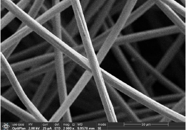
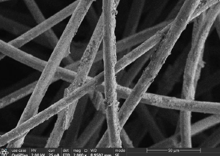
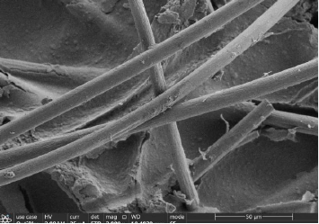

Weichfilz (Graphit-Weichfilz)

Hartfilz (Festkohlefaser)

C/C-Verbundwerkstoffe
- Kontinuierliches CVD + Oxidationsätzen: gezielte Faseroberflächenmodifikation bis zur Endverdichtung
- Einstellbare Morphologie, Dichte und Porosität
- Bei 1000 °C: Wärmeleitfähigkeit 0,15–35 W/m·K
- Druckfestigkeit: 0,1–300 MPa
- Bei 600 °C in O₂: Ablationsrate 5–30 %
- Prozessanpassung für spezifische Kundenumgebungen
Hartfilz – Oberflächenvarianten
C/C-Verbundwerkstoffe
- Einzigartige Gas-Flüssig-Karburierung zur bequemen Dichtekontrolle
- Individuelle Textil- und Nadelvlies-Prozesse für unterschiedliche Betriebsbedingungen
- Optional Borierung oder Silizierung auf Anfrage
- Aschegehalt: 4,98 ppm nach Reinigung